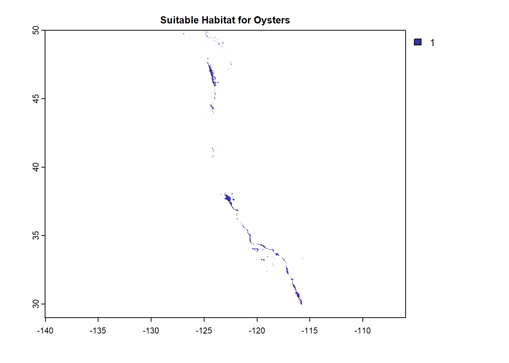

This project explores the suitable habitats for species along the Western Coast, beginning with an Oyster and then creating a function to explore any species. The parameters to explore are depth and sea surface temperature. This could futher be expanded with more variables, including change of temperature within the water column. These regions are broken down to five Exclusive Economic Zones (EEZ) along the West Coast of the US.
This could be applied for restoration efforts to determine where habitat is suitable for any oceanic species.
v ggplot2 3.4.0 v purrr 0.3.5
v tibble 3.1.8 v dplyr 1.0.10
v tidyr 1.2.1 v stringr 1.4.1
v readr 2.1.3 v forcats 0.5.2
-- Conflicts ------------------------------------------ tidyverse_conflicts() --
x tidyr::extract() masks terra::extract()
x dplyr::filter() masks stats::filter()
x dplyr::lag() masks stats::lag()
Show the code
library(tmap)library(ggpubr) # Combines ggplots
Attaching package: 'ggpubr'
The following object is masked from 'package:terra':
rotate
### Overlay # Find areas that satisfy BOTHfun_mult =function(x,y){return(x*y)} # Function to multiply layersOystersHabitat <-lapp(c(OysterSST, OysterDepth), fun_mult)plot(OystersHabitat, col ="blue")

Determine the most suitable EEZ
Show the code
##### Turn Regions data into rasterRegions$rgn <-as.factor(Regions$rgn)RegionsRast <-rasterize(vect(Regions), OystersHabitat, field ="rgn")plot(RegionsRast)
Show the code
##### Select suitable cells in EEZROmask <-mask(RegionsRast, OystersHabitat)##### Find area of grid cellsexpanse(ROmask, unit ="km") # 11099.3 km
[1] 11099.3
Show the code
##### Find total suitable area within each EEZOysterZone <-expanse(ROmask, unit ="km", byValue =TRUE)OysterZone
##### Find percentage of each zoneOysterRegion <-cbind(OysterZone, Regions)OysterRegion <- OysterRegion |>mutate(percent = (area/area_km2)*100)print(paste("Central California has 3864.5258 km2, 2.14% of the EEZ. Northern California has 150.4956 km2, .09% of the EEZ. Orgeon has 1089.7404 km2, with .53%. Southern California has 3467.7569 km2, with 1.67%. Washington has 2526.7837 with 3.77%"))
[1] "Central California has 3864.5258 km2, 2.14% of the EEZ. Northern California has 150.4956 km2, .09% of the EEZ. Orgeon has 1089.7404 km2, with .53%. Southern California has 3467.7569 km2, with 1.67%. Washington has 2526.7837 with 3.77%"
Visualization
Show the code
#### Total suitable area by regiontm_shape(OysterRegion) +tm_polygons("area", palette ="YlGn") +tm_text(text ="rgn",size = .7) +tm_layout(main.title ="Suitable Oyster Area",main.title.size =1.2,main.title.position ="center") +tm_layout(legend.position =c("left", "bottom"))
Some legend labels were too wide. These labels have been resized to 0.55, 0.55, 0.55. Increase legend.width (argument of tm_layout) to make the legend wider and therefore the labels larger.